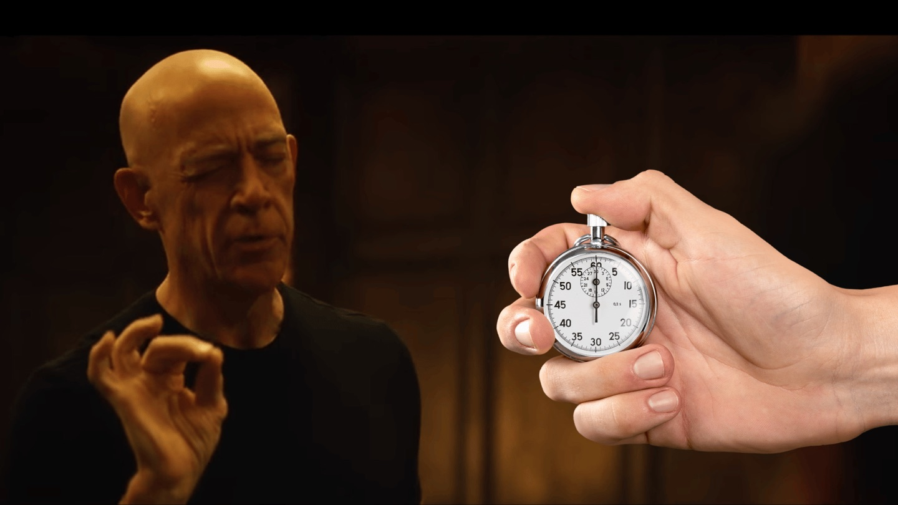

Not quite my timer...

1:00:00
5m
15m
1h
min
sec
Start
Reset
Add a YouTube playlist below, then hit Start.
🔀 Another random song
Playlist
YouTube / YouTube Music playlist link or ID
Save & load playlist
Test random song